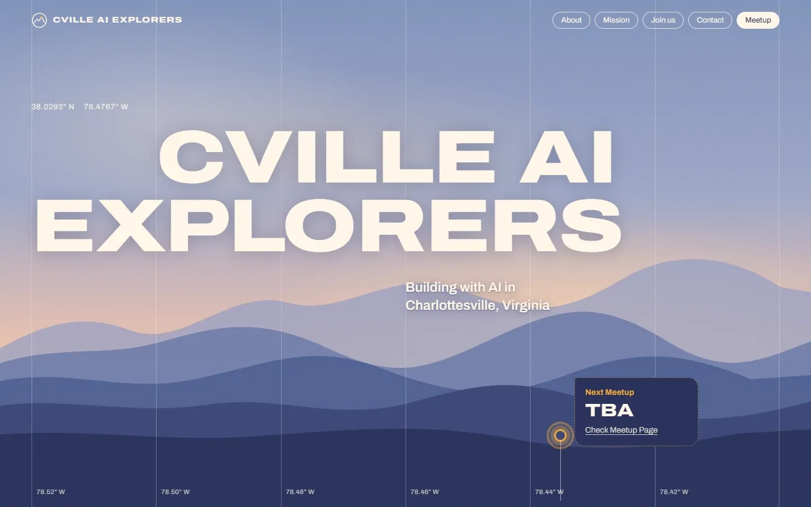
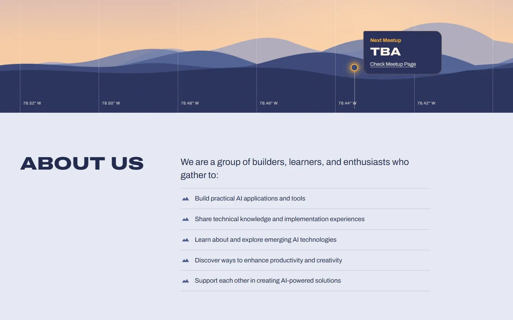
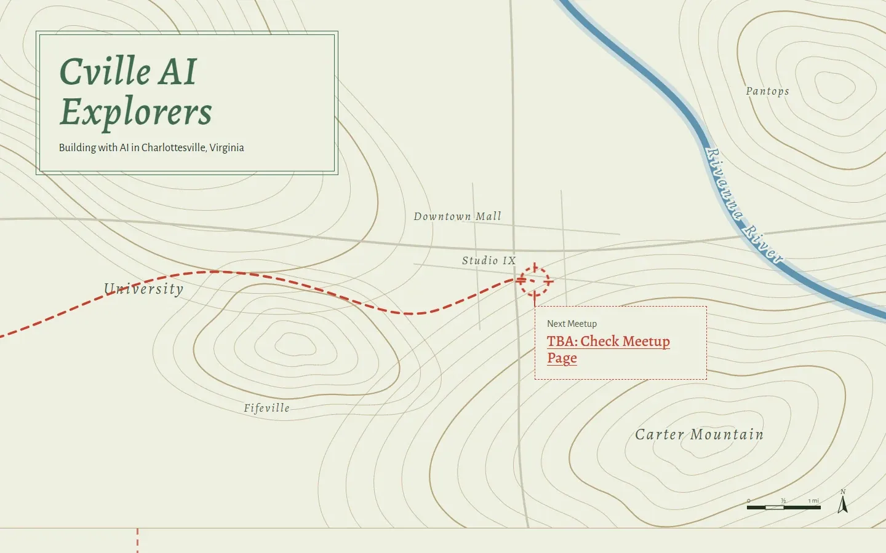
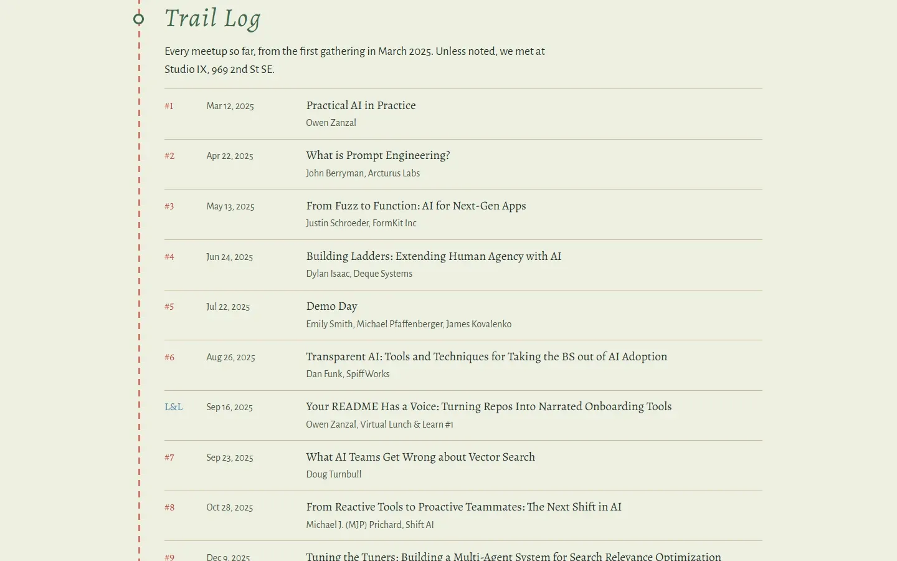
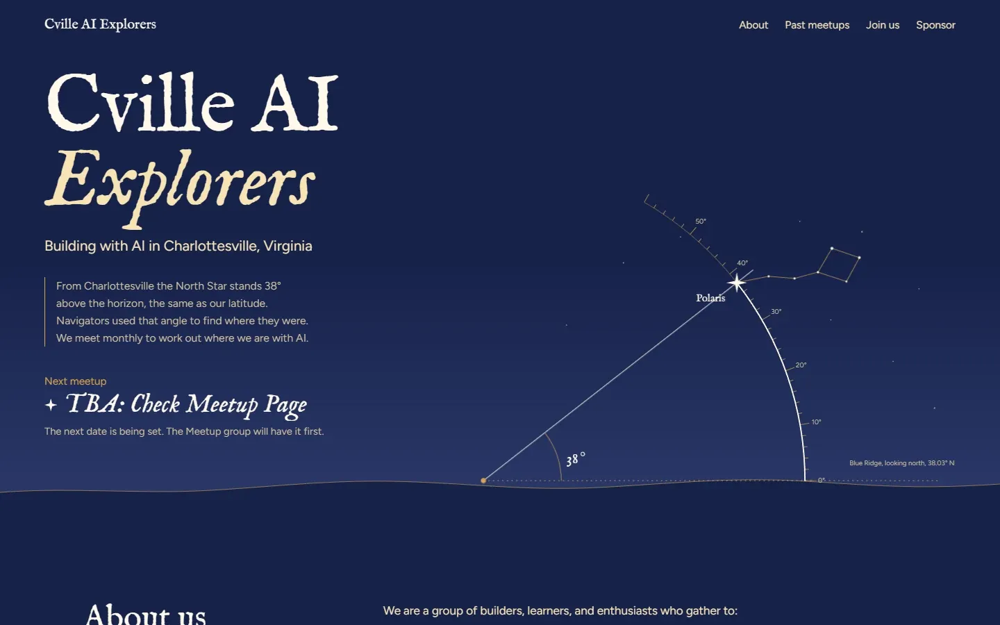
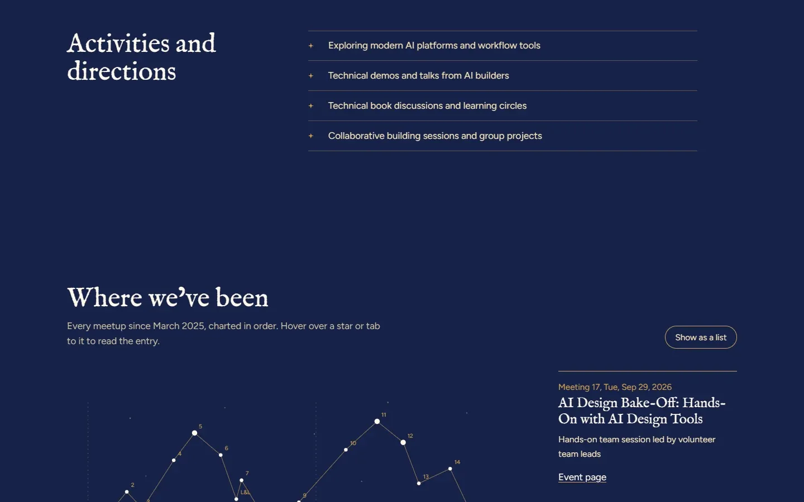
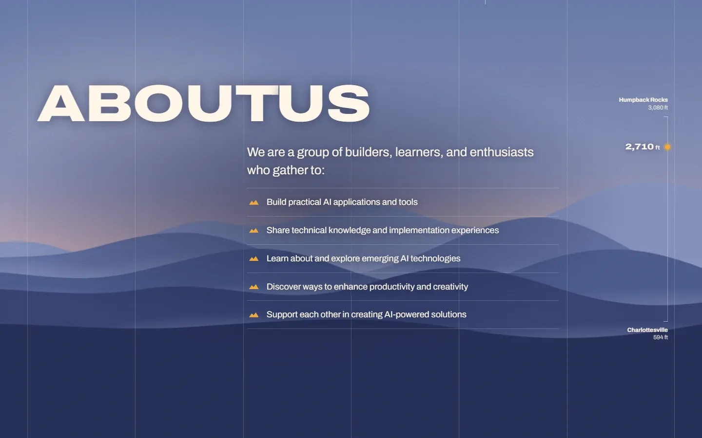
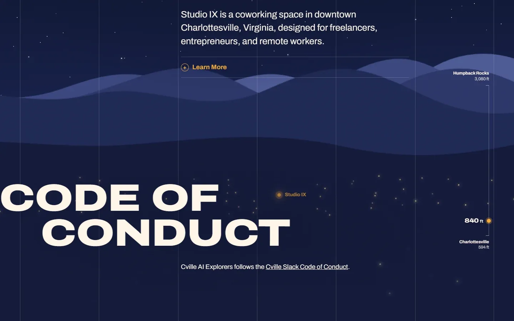

The journey
How Ridgeline took shape
Ridgeline's earlier rounds and the two concepts it beat are still working pages. The pictures below are their screens; each opens the page itself.
Three concepts
With Mobbin references in hand, the team built three directions side by side, each with the same TBA and dated next-meetup states. A small hub page links them.
A. Ridgeline, first round
“Based on the Atlas reference”: Blue Ridge layers at dusk behind a staggered, wide, uppercase headline and a survey grid, with the content below on a light ground.


B. Field Map
A printed topographic map of Charlottesville with the Rivanna River, a pin at Studio IX, and a trail log of past meetups.


C. Polaris at 38°
Celestial navigation: a sextant measures Polaris at Charlottesville's latitude, and the past meetups form a constellation.


Round two: one scene
They picked Ridgeline. In the second round the page became one scene: scrolling descends from Humpback Rocks to downtown and drives the sky, ridges, haze, stars, town lights and an altimeter.


Round three: indoors
The descent now ends inside. A white wall rises over the night for the content sections, with framed photos, and the sponsor gets a warm oak room.
Finished
In the final version the photos lose their frames and become soft-edged backgrounds that drift and fade in.